# Generate random datan <- 50; p <- 20x <- abs(rmatrix(n, p, rnorm, mean=4, sd=1))x[1:10, seq(1, 10, 2)] <- x[1:10, seq(1, 10, 2)] + 3x[11:20, seq(2, 10, 2)] <- x[11:20, seq(2, 10, 2)] + 2rownames(x) <- paste("ROW", 1:n)colnames(x) <- paste("COL", 1:p)## Scalingaheatmap(x, scale = "row")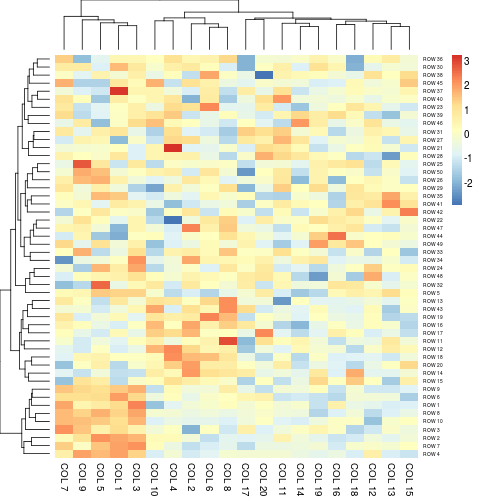
aheatmap(x, scale = "col") # partially matched to 'column'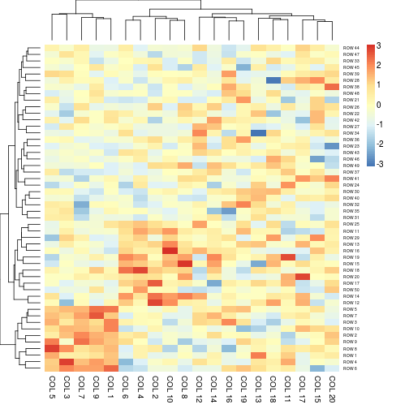
aheatmap(x, scale = "r1") # each row sum up to 1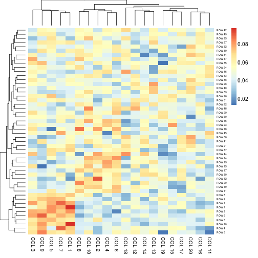
aheatmap(x, scale = "c1") # each colum sum up to 1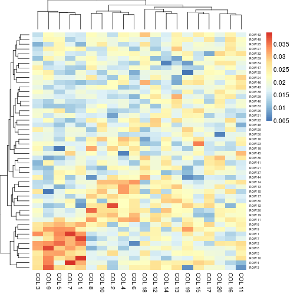
## Heatmap colorsaheatmap(x, color = colorRampPalette(c("navy", "white", "firebrick3"))(50))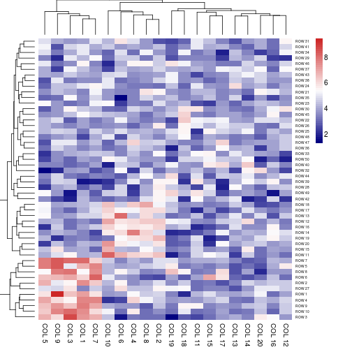
# color specification as an integer: use R basic colorsaheatmap(x, color = 1L)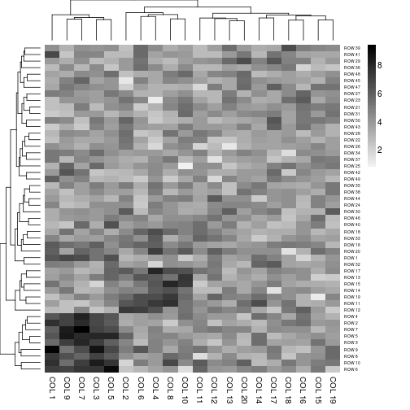
# color specification as a negative integer: use reverse basic paletteaheatmap(x, color = -1L)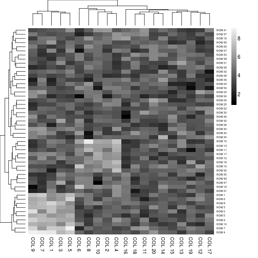
# color specification as a numeric: use HCL coloraheatmap(x, color = 1)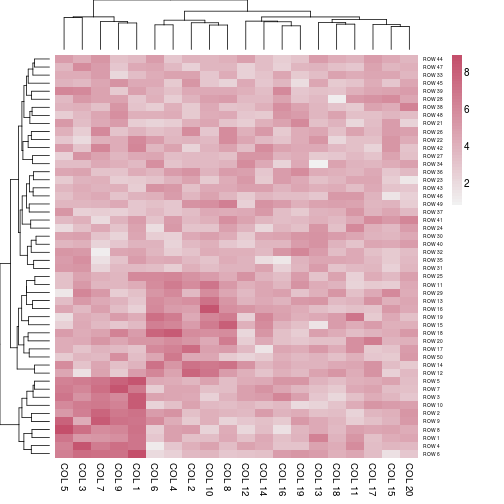
# do not cluster the rowsaheatmap(x, Rowv = NA)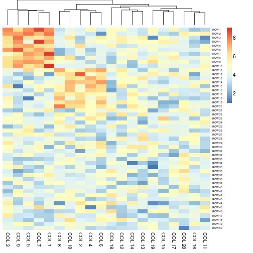
# no heatmap legendaheatmap(x, legend = FALSE)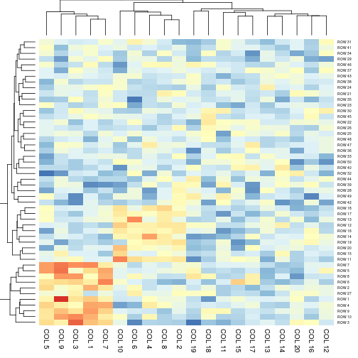
# cell and font sizeaheatmap(x, cellwidth = 10, cellheight = 5)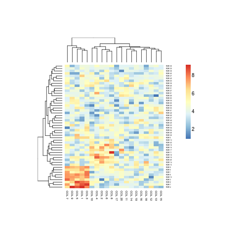
# directly write into a fileaheatmap(x, cellwidth = 15, cellheight = 12, fontsize = 8, filename = "aheatmap.pdf")unlink('aheatmap.pdf')# Generate column annotationsannotation = data.frame(Var1 = factor(1:p %% 2 == 0, labels = c("Class1", "Class2")), Var2 = 1:10)aheatmap(x, annCol = annotation)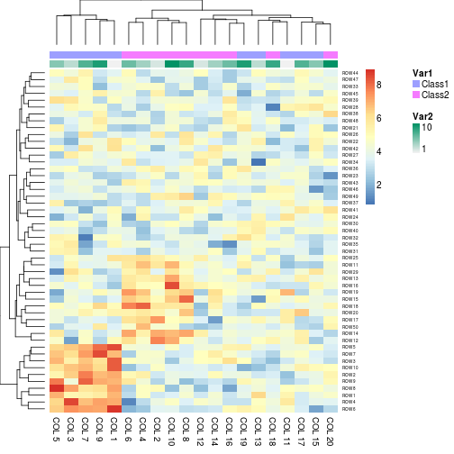
aheatmap(x, annCol = annotation, annLegend = FALSE)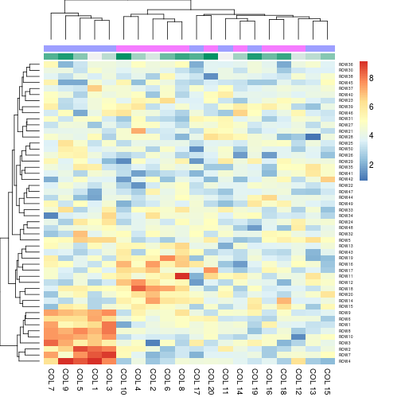
# Specify colorsVar1 = c("navy", "darkgreen")names(Var1) = c("Class1", "Class2")Var2 = c("lightgreen", "navy")ann_colors = list(Var1 = Var1, Var2 = Var2)aheatmap(x, annCol = annotation, annColors = ann_colors)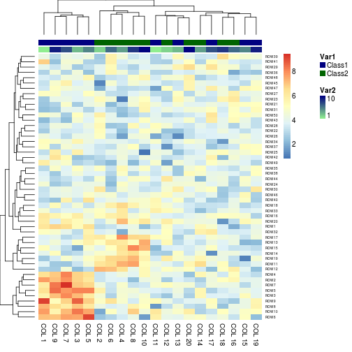
# Specifying clustering from distance matrixdrows = dist(x, method = "minkowski")dcols = dist(t(x), method = "minkowski")aheatmap(x, Rowv = drows, Colv = dcols)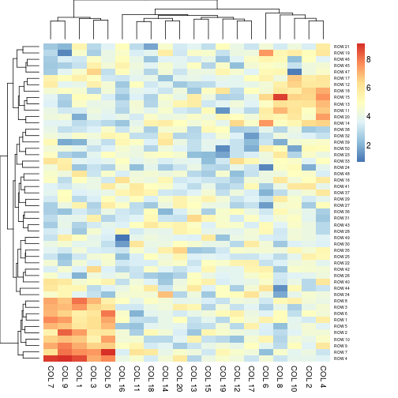